1. GRAM / 1.चना
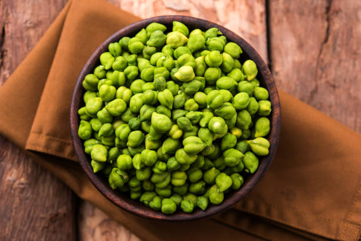
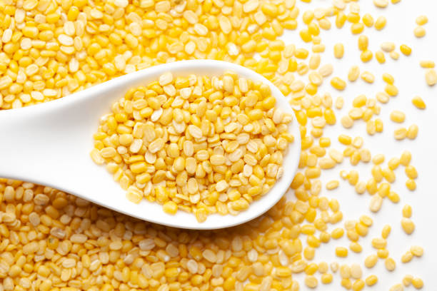
Gram, or chickpeas, is primarily grown in Delhi during the rabi season (October to March). It is most cultivated in states like Madhya Pradesh and Rajasthan, where market demand is also high. Gram thrives in well-drained, sandy loam or clay loam soils with a pH of 6-8. Optimal soil temperature ranges from 20-30°C. Nutritionally, it’s rich in protein, fiber, and essential minerals. Growing gram requires about 90-120 days, with moderate water resources. Demand is particularly high in states like Punjab, Haryana, and Gujarat, driven by its popularity in various cuisines.
चना या छोले मुख्य रूप से रबी सीजन (अक्टूबर से मार्च) के दौरान दिल्ली में उगाए जाते हैं। इसकी खेती सबसे ज़्यादा मध्य प्रदेश और राजस्थान जैसे राज्यों में की जाती है, जहाँ बाज़ार में इसकी माँग भी बहुत ज़्यादा है। चना अच्छी जल निकासी वाली, रेतीली दोमट या चिकनी दोमट मिट्टी में पनपता है जिसका pH 6-8 होता है। मिट्टी का इष्टतम तापमान 20-30 डिग्री सेल्सियस के बीच होता है। पोषण की दृष्टि से, यह प्रोटीन, फाइबर और ज़रूरी खनिजों से भरपूर होता है। चने को उगाने में लगभग 90-120 दिन लगते हैं, और पानी की ज़रूरत भी मध्यम होती है। पंजाब, हरियाणा और गुजरात जैसे राज्यों में इसकी माँग विशेष रूप से बहुत ज़्यादा है, क्योंकि यहाँ इसे कई तरह के व्यंजनों में इस्तेमाल किया जाता है।
2. MOONG / 2.मूंग


Moong, or green gram, is primarily grown in Delhi during the kharif season (June to September) and rabi season (October to March). It is mainly cultivated in states like Maharashtra and Karnataka, which also dominate the market share. Moong thrives in well-drained, sandy loam or loamy soil with a pH of 6-7. Optimal soil temperature ranges from 25-35°C. Nutritionally, it is rich in protein, fiber, and vitamins. Growing moong typically takes about 60-90 days and requires moderate water. Demand is particularly high in states like Punjab and Uttar Pradesh, driven by its versatility in dishes.
मूंग या हरा चना मुख्य रूप से दिल्ली में खरीफ सीजन (जून से सितंबर) और रबी सीजन (अक्टूबर से मार्च) के दौरान उगाया जाता है। इसकी खेती मुख्य रूप से महाराष्ट्र और कर्नाटक जैसे राज्यों में की जाती है, जो बाजार में भी अपना दबदबा बनाए हुए हैं। मूंग 6-7 पीएच वाली अच्छी जल निकासी वाली, रेतीली दोमट या दोमट मिट्टी में पनपता है। इष्टतम मिट्टी का तापमान 25-35 डिग्री सेल्सियस के बीच होता है। पोषण की दृष्टि से, यह प्रोटीन, फाइबर और विटामिन से भरपूर होता है। मूंग उगाने में आमतौर पर लगभग 60-90 दिन लगते हैं और इसके लिए मध्यम पानी की आवश्यकता होती है। पंजाब और उत्तर प्रदेश जैसे राज्यों में इसकी मांग विशेष रूप से अधिक है, क्योंकि व्यंजनों में इसकी बहुमुखी प्रतिभा है।
3. MASOOR / 3.मसूर
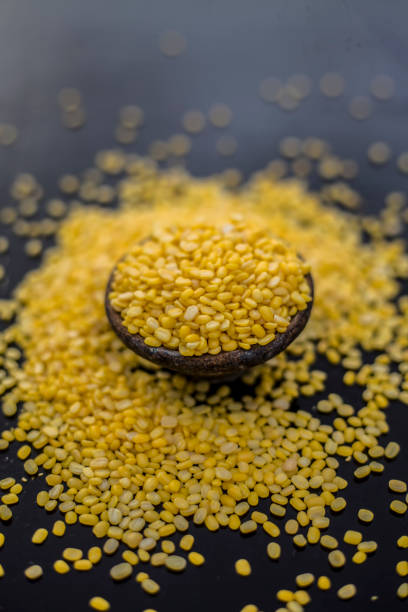
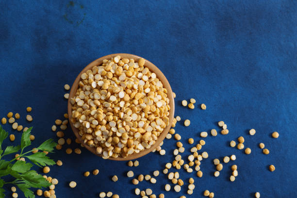
Masoor, or red lentil, is primarily grown in Delhi during the rabi season (October to March). It is mainly cultivated in states like Madhya Pradesh and Uttar Pradesh, where it has a significant market share. Masoor prefers well-drained, loamy to clayey soil with a pH of 6-7. Optimal soil temperature ranges from 20-25°C. Nutritionally, it is high in protein, fiber, and essential vitamins. Growing masoor takes about 90-120 days and requires moderate water resources. Demand is particularly high in states like Punjab and Haryana, driven by its popularity in various dishes and soups.
मसूर या लाल मसूर मुख्य रूप से रबी सीजन (अक्टूबर से मार्च) के दौरान दिल्ली में उगाया जाता है। इसकी खेती मुख्य रूप से मध्य प्रदेश और उत्तर प्रदेश जैसे राज्यों में की जाती है, जहाँ इसका बाजार में महत्वपूर्ण हिस्सा है। मसूर को अच्छी जल निकासी वाली, दोमट से लेकर चिकनी मिट्टी पसंद है जिसका pH 6-7 हो। इष्टतम मिट्टी का तापमान 20-25 डिग्री सेल्सियस के बीच होता है। पोषण की दृष्टि से, इसमें प्रोटीन, फाइबर और आवश्यक विटामिन अधिक होते हैं। मसूर उगाने में लगभग 90-120 दिन लगते हैं और इसके लिए मध्यम जल संसाधनों की आवश्यकता होती है। पंजाब और हरियाणा जैसे राज्यों में इसकी मांग विशेष रूप से अधिक है, जो विभिन्न व्यंजनों और सूप में इसकी लोकप्रियता के कारण है।
4. ARHAR / 4.अरहर
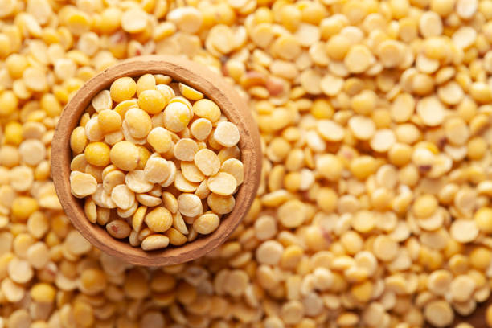
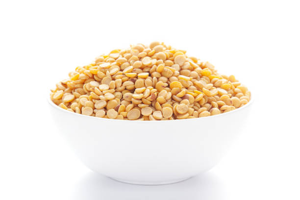
Arhar, or pigeon pea, is primarily grown in Delhi during the kharif season (June to September). It is most cultivated in states like Maharashtra and Madhya Pradesh, where it also holds a significant market share. Arhar thrives in well-drained, sandy loam or loamy soil with a pH of 6-7. Optimal soil temperature ranges from 25-30°C. Nutritionally, it is rich in protein, fiber, and essential nutrients. Growing arhar typically takes about 150-180 days and requires moderate water resources. Demand is especially high in states like Uttar Pradesh and Bihar, driven by its use in various traditional dishes.
अरहर या कबूतर की दाल मुख्य रूप से खरीफ सीजन (जून से सितंबर) के दौरान दिल्ली में उगाई जाती है। इसकी खेती महाराष्ट्र और मध्य प्रदेश जैसे राज्यों में सबसे अधिक की जाती है, जहाँ इसका बाजार में भी महत्वपूर्ण हिस्सा है। अरहर अच्छी जल निकासी वाली, रेतीली दोमट या दोमट मिट्टी में पनपती है जिसका pH 6-7 होता है। इष्टतम मिट्टी का तापमान 25-30 डिग्री सेल्सियस के बीच होता है। पोषण की दृष्टि से, यह प्रोटीन, फाइबर और आवश्यक पोषक तत्वों से भरपूर है। अरहर उगाने में आमतौर पर लगभग 150-180 दिन लगते हैं और इसके लिए मध्यम जल संसाधनों की आवश्यकता होती है। उत्तर प्रदेश और बिहार जैसे राज्यों में इसकी मांग विशेष रूप से अधिक है, जो विभिन्न पारंपरिक व्यंजनों में इसके उपयोग से प्रेरित है।
5. MUSTARD / 5.सरसों
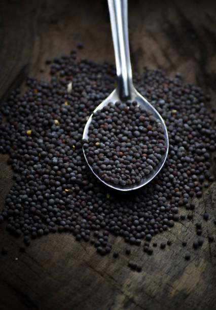
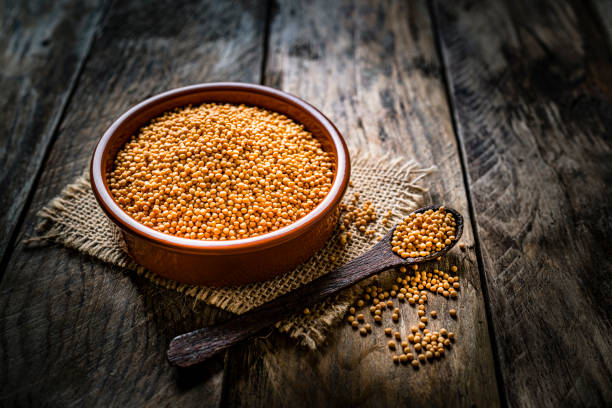
Mustard is primarily grown in Delhi during the rabi season (October to March). It is most cultivated and sold in states like Rajasthan and Haryana, which dominate the market share. Mustard thrives in well-drained, loamy or clayey soil with a pH of 6-7. Optimal soil temperature ranges from 15-25°C. Nutritionally, it is rich in healthy fats, proteins, and vitamins. Growing mustard takes about 90-150 days and requires moderate water resources. Demand is particularly high in states like Punjab and Uttar Pradesh, driven by its use in cooking oil and traditional dishes.
सरसों मुख्य रूप से रबी सीजन (अक्टूबर से मार्च) के दौरान दिल्ली में उगाई जाती है। इसकी सबसे ज़्यादा खेती और बिक्री राजस्थान और हरियाणा जैसे राज्यों में होती है, जो बाज़ार में सबसे ज़्यादा हिस्सेदारी रखते हैं। सरसों 6-7 पीएच वाली अच्छी जल निकासी वाली, दोमट या चिकनी मिट्टी में पनपती है। इष्टतम मिट्टी का तापमान 15-25 डिग्री सेल्सियस के बीच होता है। पोषण की दृष्टि से, यह स्वस्थ वसा, प्रोटीन और विटामिन से भरपूर होती है। सरसों उगाने में लगभग 90-150 दिन लगते हैं और इसके लिए मध्यम जल संसाधनों की आवश्यकता होती है। खाना पकाने के तेल और पारंपरिक व्यंजनों में इसके उपयोग के कारण पंजाब और उत्तर प्रदेश जैसे राज्यों में इसकी मांग विशेष रूप से अधिक है।
6. SOYABEAN / 6.सोयाबीन
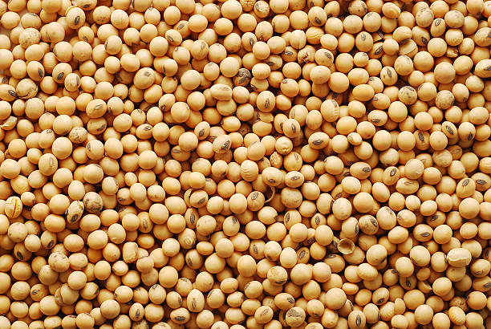
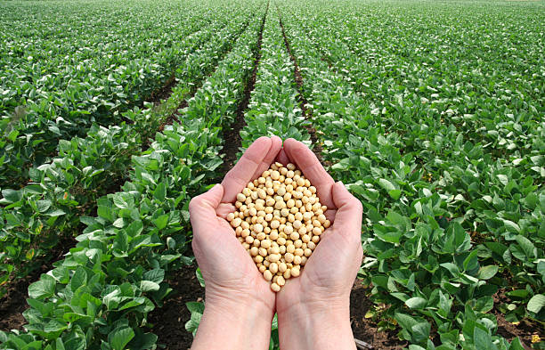
Soybean is primarily grown in Delhi during the kharif season (June to September). It is most cultivated in states like Madhya Pradesh and Maharashtra, which have the largest market share. Soybean thrives in well-drained, loamy or sandy soils with a pH of 6-7. Optimal soil temperature ranges from 20-30°C. Nutritionally, it is rich in protein, healthy fats, and fiber. Growing soybean typically takes about 90-120 days and requires moderate water resources. Demand is particularly high in states like Gujarat and Uttar Pradesh, driven by its use in oil production and as a protein source in various diets.
सोयाबीन मुख्य रूप से खरीफ सीजन (जून से सितंबर) के दौरान दिल्ली में उगाया जाता है। इसकी खेती सबसे ज़्यादा मध्य प्रदेश और महाराष्ट्र जैसे राज्यों में की जाती है, जहाँ इसका बाज़ार सबसे ज़्यादा है। सोयाबीन 6-7 pH वाली अच्छी जल निकासी वाली, दोमट या रेतीली मिट्टी में पनपती है। इष्टतम मिट्टी का तापमान 20-30 डिग्री सेल्सियस के बीच होता है। पोषण की दृष्टि से, यह प्रोटीन, स्वस्थ वसा और फाइबर से भरपूर है। सोयाबीन उगाने में आम तौर पर लगभग 90-120 दिन लगते हैं और इसके लिए मध्यम जल संसाधनों की आवश्यकता होती है। गुजरात और उत्तर प्रदेश जैसे राज्यों में इसकी माँग विशेष रूप से अधिक है, जो तेल उत्पादन में इसके उपयोग और विभिन्न आहारों में प्रोटीन स्रोत के रूप में इसके उपयोग से प्रेरित है।
7. COTTON / 7.कपास


Cotton is primarily grown in Delhi during the kharif season (June to October). It is most cultivated in states like Gujarat and Maharashtra, which dominate the market share. Cotton thrives in well-drained, black cotton soil or sandy loam with a pH of 6-8. Optimal soil temperature ranges from 20-30°C. Nutritionally, cotton seeds are rich in protein and oil. Growing cotton typically takes about 180-210 days and requires significant water resources. Demand is particularly high in textile hubs like Tamil Nadu and Punjab, driven by its essential role in the clothing and fabric industries.
कपास मुख्य रूप से खरीफ सीजन (जून से अक्टूबर) के दौरान दिल्ली में उगाया जाता है। इसकी खेती गुजरात और महाराष्ट्र जैसे राज्यों में सबसे ज़्यादा की जाती है, जो बाज़ार में सबसे ज़्यादा हिस्सेदारी रखते हैं। कपास अच्छी तरह से सूखा हुआ, काली कपास मिट्टी या 6-8 पीएच वाली रेतीली दोमट मिट्टी में पनपता है। इष्टतम मिट्टी का तापमान 20-30 डिग्री सेल्सियस के बीच होता है। पोषण की दृष्टि से, कपास के बीज प्रोटीन और तेल से भरपूर होते हैं। कपास उगाने में आम तौर पर लगभग 180-210 दिन लगते हैं और इसके लिए काफ़ी पानी की ज़रूरत होती है। तमिलनाडु और पंजाब जैसे कपड़ा केंद्रों में इसकी मांग विशेष रूप से अधिक है, जो कपड़ों और फ़ैब्रिक उद्योगों में इसकी महत्वपूर्ण भूमिका के कारण है।
8. SUGARCANE / 8.गन्ना
 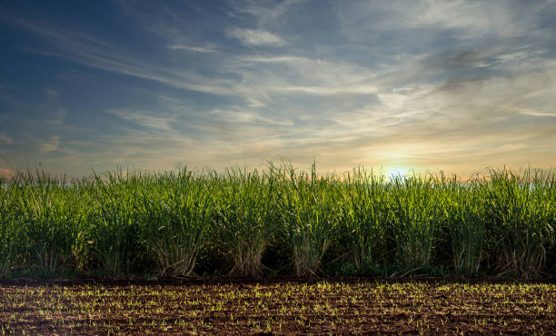
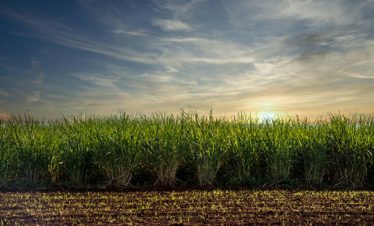
Sugarcane is grown in Delhi primarily during the kharif season (July to November). It is predominantly cultivated and sold in states like Uttar Pradesh and Maharashtra, which hold the largest market share. Sugarcane thrives in well-drained, loamy or sandy soils with a pH of 6-8. Optimal soil temperature ranges from 20-30°C. Nutritionally, it provides carbohydrates, vitamins, and minerals. Growing sugarcane typically takes about 12-18 months and requires substantial water resources. Demand is particularly high in states like Punjab and Haryana, driven by its use in sugar production, jaggery, and various food products.
दिल्ली में गन्ना मुख्य रूप से खरीफ सीजन (जुलाई से नवंबर) के दौरान उगाया जाता है। यह मुख्य रूप से उत्तर प्रदेश और महाराष्ट्र जैसे राज्यों में उगाया और बेचा जाता है, जो बाजार में सबसे बड़ा हिस्सा रखते हैं। गन्ना 6-8 के पीएच के साथ अच्छी तरह से सूखा, दोमट या रेतीली मिट्टी में पनपता है। इष्टतम मिट्टी का तापमान 20-30 डिग्री सेल्सियस के बीच होता है। पोषण की दृष्टि से, यह कार्बोहाइड्रेट, विटामिन और खनिज प्रदान करता है। गन्ना उगाने में आमतौर पर लगभग 12-18 महीने लगते हैं और इसके लिए पर्याप्त जल संसाधनों की आवश्यकता होती है। पंजाब और हरियाणा जैसे राज्यों में इसकी मांग विशेष रूप से अधिक है, जो चीनी उत्पादन, गुड़ और विभिन्न खाद्य उत्पादों में इसके उपयोग से प्रेरित है।
9. TOBACCO / 9.तम्बाकू

Tobacco is grown in Delhi primarily during the kharif season (June to November). It is most cultivated in states like Andhra Pradesh and Gujarat, which dominate the market share. Tobacco thrives in well-drained, sandy loam or light clay soils with a pH of 5.5-6.5. Optimal soil temperature ranges from 20-30°C. Nutritionally, it is primarily a source of nicotine, with limited dietary value. Growing tobacco typically takes about 90-120 days and requires significant water resources. Demand is particularly high in states like Punjab and Haryana, driven by its use in cigarettes, bidis, and other tobacco products.
दिल्ली में तम्बाकू मुख्य रूप से खरीफ सीजन (जून से नवंबर) के दौरान उगाया जाता है। इसकी सबसे ज़्यादा खेती आंध्र प्रदेश और गुजरात जैसे राज्यों में की जाती है, जो बाज़ार में सबसे ज़्यादा हिस्सेदारी रखते हैं। तम्बाकू अच्छी जल निकासी वाली, रेतीली दोमट या हल्की चिकनी मिट्टी में पनपता है जिसका pH 5.5-6.5 होता है। इष्टतम मिट्टी का तापमान 20-30 डिग्री सेल्सियस के बीच होता है। पोषण की दृष्टि से, यह मुख्य रूप से निकोटीन का स्रोत है, जिसका आहार मूल्य सीमित है। तम्बाकू उगाने में आम तौर पर लगभग 90-120 दिन लगते हैं और इसके लिए काफ़ी पानी की ज़रूरत होती है। पंजाब और हरियाणा जैसे राज्यों में इसकी मांग विशेष रूप से अधिक है, जो सिगरेट, बीड़ी और अन्य तम्बाकू उत्पादों में इसके उपयोग के कारण है।